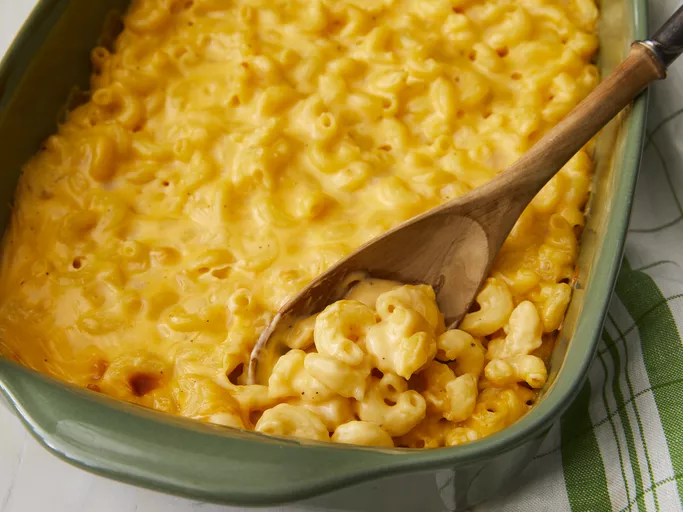

Baked Mac

Description
Baked mac, short for baked macaroni and cheese, is a comfort food dish made by combining cooked macaroni pasta with a creamy cheese sauce—typically made from cheddar or a blend of cheeses—and then baking it in the oven until the top is golden and slightly crispy. It’s often enriched with milk, butter, and flour to create a smooth béchamel base and may be topped with breadcrumbs or extra cheese for added texture.
To make baked mac, cook macaroni pasta and mix it with a creamy cheese sauce made from butter, milk, flour, and shredded cheese.
Transfer to a baking dish, top with more cheese or breadcrumbs, and bake until the top is golden and bubbly.
Ingredients
This creamy baked mac and cheese recipe is one I first made three years ago when I was in California. When I got back to Texas, I made it for my mom. This is now her favorite macaroni and cheese. She begs me to make it when I come to visit.
- 2 tablespoons butter
- ¼ cup finely chopped onion
- 2 tablespoons all-purpose flour
- 2 cups milk
- ¾ teaspoon salt
- ½ teaspoon dry mustard
- ¼ teaspoon ground black pepper
- 1 (8 ounce) package elbow macaroni
- 2 cups shredded sharp Cheddar cheese
- 1 (8 ounce) package processed American cheese, cut into strips
Steps
Here's a very brief overview of what you can expect when you make homemade Baked Mac:
- Preheat the oven to 350 degrees F (175 degrees C).
- Melt butter in a medium saucepan over medium heat. Sauté onion for 2 minutes. Stir in flour and cook for 1 minute, stirring constantly.
- Then stir in milk, salt, mustard, and pepper. Cook, stirring frequently, until mixture boils and thickens.
- Meanwhile, bring a pot of lightly salted water to a boil. Add macaroni and cook until al dente, 8 to 10 minutes; drain.
- Add Cheddar and American cheeses to milk mixture; stir until cheese melts.
- Combine cheese sauce and macaroni in a 2-quart baking dish; mix well.
- Bake in preheated oven until hot and bubbly, about 30 minutes. Let cool 10 minutes before serving.
Home